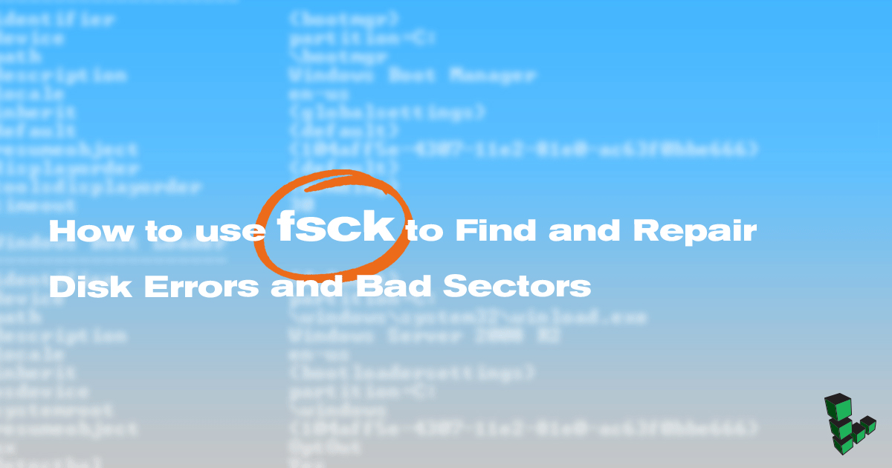

How to use fsck to Find and Repair Disk Errors and Bad Sectors
Updated by Linode Written by Edward Angert

This guide is part of a series on Linux commands and features. Not all commands may be relevant to Linode-specific hardware, and are included here to provide an easy to access reference for the Linux community. If you have a command or troubleshooting tip that would help others, please submit a pull request or comment.
What is fsck?
fsck, short for file system consistency check, is a utility that examines the file system for errors and attempts to repair them if possible. It uses a combination of built-in tools to check the disk and generates a report of its findings.
On some systems, fsck runs automatically after an unclean shutdown or after a certain number of reboots.
When to Use fsck
Use fsck to check your file system if your system fails to boot, if files on a specific disk become corrupt, or if an attached drive does not act as expected. Unmount the disks you intend to work on before attempting to check or repair them.
CautionUnmount the target disk first. You risk corrupting your file system and losing data if you run fsck on an active disk.
fsck Options and Arguments
| Option | Action |
|---|---|
-a |
Attempt to fix errors automatically. Use with caution. |
-f |
Force fsck to check a file system even if it thinks it’s clean. |
-A |
Check all disks listed in /etc/fstab. |
-C |
Show progress bar (ext2 and ext3 file systems only). |
-M |
Skip mounted file systems. |
-N |
Test run. Describes what would happen without executing the check itself. |
-P |
Use with the -A option to run multiple checks in parallel. |
-R |
If using the -A option, do not check the root filesystem. |
-t |
Check only a specific type of filesystem. |
-T |
Skip the title on startup. |
-y |
Interactive repair mode. |
Unmount the Disk
Boot into Rescue Mode
If you are using fsck on a Linode, the easiest and safest way to unmount your disk is to use Rescue Mode. Visit our Rescue and Rebuild guide for instructions on how to boot your Linode into Rescue Mode. If you’re working on a local machine, consider using the distribution’s recovery mode or a live distribution to avoid working on a mounted disk. fsck should be run only as a user with root permissions.
View Mounted Disks and Verify Disk Location
Run
dfto view a list of currently mounted disks. If you are using Rescue Mode, the disk you want to check should not be listed:df -hUse
fdiskto view disk locations:fdisk -lCopy the location of the target disk to use with the fsck command.
Configuration Profile
If you are working on a Linode but do not wish to use Rescue Mode, shut down the Linode from the Linode Manager. Unmount the disk from the Configuration Profile. Apply the changes and reboot the Linode.
Manual Unmount
If you are working on a local machine, unmount the disk manually.
Use
umountto unmount the disk location copied in the previous step:umount /dev/sdbIf the disk is declared in
/etc/fstab, change themount pointtononethere as well.
How to Check for Errors on a Disk
Run fsck on the target disk, using the desired options. This example checks all file systems (-A) on /dev/sdb:
fsck -A /dev/sdb
Understand fsck Error Codes
The error codes that fsck returns can be understood with the following table from man7.org:
| Code | Error Code Meaning |
|---|---|
| 0 | No errors |
| 1 | Filesystem errors corrected |
| 2 | System should be rebooted |
| 4 | Filesystem errors left uncorrected |
| 8 | Operational error |
| 16 | Usage or syntax error |
| 32 | Checking canceled by user request |
| 128 | Shared-library error |
Use fsck to Repair File System Errors
Use the -r option to use the interactive repair option.
This example uses fsck to check all file systems except the root, and will attempt repair using the interactive feature:
fsck -AR -y
To check and attempt to repair any errors on /dev/sdb, use this format:
fsck -y /dev/sdb
What if fsck got interrupted?
If fsck gets interrupted, it will complete any checks in process, but will not attempt to repair any errors it finds.
More Information
You may wish to consult the following resources for additional information on this topic. While these are provided in the hope that they will be useful, please note that we cannot vouch for the accuracy or timeliness of externally hosted materials.
Join our Community
Find answers, ask questions, and help others.
This guide is published under a CC BY-ND 4.0 license.